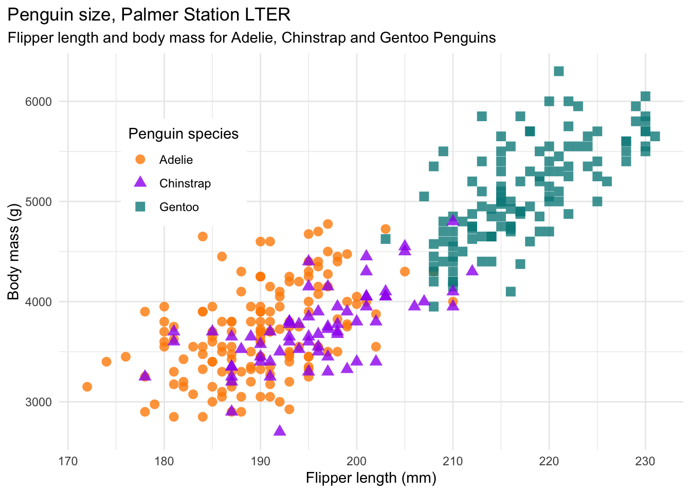

The goal of palmerpenguins is to provide a great dataset for data exploration & visualization, as an alternative to iris.
Installation
You can install the development version from GitHub with:
# install.packages("remotes") remotes::install_github("allisonhorst/palmerpenguins")
About the data
Data were collected and made available by Dr. Kristen Gorman and the Palmer Station, Antarctica LTER, a member of the Long Term Ecological Research Network.
Thank you to Dr. Gorman, Palmer Station LTER and the LTER Network! Special thanks to Marty Downs (Director, LTER Network Office) for help regarding the data license & use.
License
Data are available by CC-0 license in accordance with the Palmer Station LTER Data Policy and the LTER Data Access Policy for Type I data.
Citation
To cite the data used in this package, please use:
citation("palmerpenguins") #> #> To cite palmerpenguins in publications use: #> #> Gorman KB, Williams TD, Fraser WR (2014) Ecological Sexual Dimorphism #> and Environmental Variability within a Community of Antarctic #> Penguins (Genus Pygoscelis). PLoS ONE 9(3): e90081. #> https://doi.org/10.1371/journal.pone.0090081 #> #> A BibTeX entry for LaTeX users is #> #> @Article{, #> title = {Ecological Sexual Dimorphism and Environmental Variability within a Community of Antarctic Penguins (Genus Pygoscelis)}, #> author = {Gorman KB and Williams TD and Fraser WR}, #> journal = {PLoS ONE}, #> year = {2014}, #> volume = {9(3)}, #> number = {e90081}, #> pages = {-13}, #> url = {https://doi.org/10.1371/journal.pone.0090081}, #> }
Example
There are two datasets. One is called penguins, and is a simplified version of the raw data. All column names are in snake case to make them easier to work with, see ?penguins for more info:
library(palmerpenguins) glimpse(penguins) #> Rows: 344 #> Columns: 7 #> $ species <fct> Adelie, Adelie, Adelie, Adelie, Adelie, Adelie, Ade… #> $ island <fct> Torgersen, Torgersen, Torgersen, Torgersen, Torgers… #> $ culmen_length_mm <dbl> 39.1, 39.5, 40.3, NA, 36.7, 39.3, 38.9, 39.2, 34.1,… #> $ culmen_depth_mm <dbl> 18.7, 17.4, 18.0, NA, 19.3, 20.6, 17.8, 19.6, 18.1,… #> $ flipper_length_mm <int> 181, 186, 195, NA, 193, 190, 181, 195, 193, 190, 18… #> $ body_mass_g <int> 3750, 3800, 3250, NA, 3450, 3650, 3625, 4675, 3475,… #> $ sex <fct> MALE, FEMALE, FEMALE, NA, FEMALE, MALE, FEMALE, MAL… penguins %>% count(species) #> # A tibble: 3 x 2 #> species n #> * <fct> <int> #> 1 Adelie 152 #> 2 Chinstrap 68 #> 3 Gentoo 124
The second dataset is penguins_raw, and contains all the variables and original names as downloaded. See ?penguins_raw for more info.
Penguins are fun to visualize! For example:



Additional data use information
Anyone interested in publishing the data should contact Dr. Kristen Gorman about analysis and working together on any final products.
From Gorman et al. (2014):
“Data reported here are publicly available within the PAL-LTER data system (datasets #219, 220, and 221): http://oceaninformatics.ucsd.edu/datazoo/data/pallter/datasets. Individuals interested in using these data are therefore expected to follow the US LTER Network’s Data Access Policy, Requirements and Use Agreement: https://lternet.edu/data-access-policy/.”
Please cite data using the following:
Adélie penguins:
- Palmer Station Antarctica LTER and K. Gorman, 2020. Structural size measurements and isotopic signatures of foraging among adult male and female Adélie penguins (Pygoscelis adeliae) nesting along the Palmer Archipelago near Palmer Station, 2007-2009 ver 5. Environmental Data Initiative. https://doi.org/10.6073/pasta/98b16d7d563f265cb52372c8ca99e60f (Accessed 2020-06-08).
Gentoo penguins:
- Palmer Station Antarctica LTER and K. Gorman, 2020. Structural size measurements and isotopic signatures of foraging among adult male and female Gentoo penguin (Pygoscelis papua) nesting along the Palmer Archipelago near Palmer Station, 2007-2009 ver 5. Environmental Data Initiative. https://doi.org/10.6073/pasta/7fca67fb28d56ee2ffa3d9370ebda689 (Accessed 2020-06-08).
Chinstrap penguins:
- Palmer Station Antarctica LTER and K. Gorman, 2020. Structural size measurements and isotopic signatures of foraging among adult male and female Chinstrap penguin (Pygoscelis antarcticus) nesting along the Palmer Archipelago near Palmer Station, 2007-2009 ver 6. Environmental Data Initiative. https://doi.org/10.6073/pasta/c14dfcfada8ea13a17536e73eb6fbe9e (Accessed 2020-06-08).